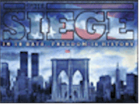
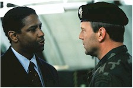
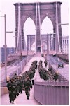

Contents | Features | Reviews | News | Archives | Store |
 |
|
| Movie Credits | Buy It! |
The Siege
Review by Sean Axmaker
Posted 6 November 1998
|  | Directed by Edward Zwick Starring
Denzel Washington, Annette Bening, Written by Lawrence Wright |
Message films are the bugaboo of directors. So many competent, even fairly talented directors feel driven to make "statements" with screenplays that advertise their intentions like a T-shirt slogan, which they invariably direct with the subtlety of a used car TV ad. There’s nothing wrong with making meaningful films or addressing weighty topics -- we’d have a much poorer cinema without such aspirations -- but once a director sets out into such cerebral topics as "the nature of freedom" he or she had better have a game plan that allows us to see the ideas at work in dramatic form or the project is doomed to sink under the weight of it’s own perceived importance.
Edward Zwick set out to explore the basic rights of American citizens as outlined in the Constitution and the Bill of Rights, rights that most Americans at roots take for granted yet are daily suspended from citizens all around the world. And he’s found a topical entry into that experience, the palpable fear of terrorism brought home in the World Trade Center bombings not too many years ago. By placing the film in New York, with it’s plethora of recognizable landmarks, he has the appropriate backdrop to bring those fears home once again. So far so good. Even after a summer where not one but two outer space threats destroy picture postcard architecture in comic book plots, the iconic power of New York perseveres.
Unfortunately New York remains more icon than lived in city under the too-carefully constructed images of Zwick. Not at first, mind you. For a while the film is a terrific thriller defined by urban bustle and big city congestion, but as the "big ideas" becomes more prominent so does Zwick’s sloganeering visual style. At his best he’s an impressive craftsman, but he still hasn’t the cinematic intelligence to translate his slick styling and Hitchcock devices to resonant, thoughtful reflection.
Zwick teams up once again with Denzel Washington, the actor he led to an Oscar winning performance in Glory and directed again in Courage Under Fire (incidentally Zwick’s two best films). Over the years Washington has imbued his honey smooth tenor and resolute eyes with a warmth and moral weight. As FBI investigator Anthony Hubbard, head of the Joint FBI/NYPD Terrorism Task Force, he’s a fiercely determined commander with a firm authority and easy manner. It’s a part Gregory Peck could have played, and Washington does no shame to the comparison.
When a terrorist bombing rocks New York he’s at the scene with his partner Frank Haddad (Tony Shalhoub), an easy-going Lebanese American with a self effacing wit. No one is hurt and the only message they receive is a with a fax with the obscure demand: "Set him free." Just who, Washington and his FBI compatriots don’t know, and as far as that goes can’t know. We, however, recall the prologue, a military intelligence trap laid for Sheik Ahmed Bin Tala in a scene that recalls Tom Clancy. Behind the illegal abduction is a smirking Bruce Willis as General William Devereaux, a ruthless Army Officer who places national security above law. No one outside of Devereaux’s circle even knows he’s holding the Sheik -- perhaps a case for plausible deniability, but the implications go much farther. More in this later.
Meanwhile Hubbard’s team follows its leads and shadows a suspect abducted by yet another branch of US security, this time a unit of the CIA led by Elise Kraft (Annette Bening), a shadowy figure with more than one alias and possibly compromising ties to the Arab community. Bening plays her character close to the chest but she allows Elise to suggest, in moments, a moral purpose of her own (which is made explicit later in the film) and the fears that she’s compromised her own being a little too much in the cause. As Elise follows a trail of clues through her own network of contacts she keeps showing up at crime scenes and investigation sites and eventually forms an uneasy alliance with Hubbard.
 In one of the best
scenes of the film Hubbard briefs a room full of New York city officials and government
brass on the progress of the investigation into the terrorist bombings of NYC. In the
middle of his speech a beeper goes off. Then another. Soon the room erupts in a chorus of
cellular chirps. It’s a scene that would make Hitchcock proud: there’s been
another bombing, and this time it’s hit the government where it lives. The FBI
building has been leveled and, over the strenuous objections of both Hubbard and
Devereaux, the government calls in the military. Though Devereaux’s arguments are
sound his delivery rings hollow, just as his earlier meeting with Hubbard (who, it turns
out, previously served under Devereaux in the army) is more ominous than informative.
It’s not simply that Devereaux continues to lie about his months long custody of the
Sheik, but he seems to be feeling out the situation. Willis plays him with such smarmy
insincerity that you can’t help but distrust the guy.
In one of the best
scenes of the film Hubbard briefs a room full of New York city officials and government
brass on the progress of the investigation into the terrorist bombings of NYC. In the
middle of his speech a beeper goes off. Then another. Soon the room erupts in a chorus of
cellular chirps. It’s a scene that would make Hitchcock proud: there’s been
another bombing, and this time it’s hit the government where it lives. The FBI
building has been leveled and, over the strenuous objections of both Hubbard and
Devereaux, the government calls in the military. Though Devereaux’s arguments are
sound his delivery rings hollow, just as his earlier meeting with Hubbard (who, it turns
out, previously served under Devereaux in the army) is more ominous than informative.
It’s not simply that Devereaux continues to lie about his months long custody of the
Sheik, but he seems to be feeling out the situation. Willis plays him with such smarmy
insincerity that you can’t help but distrust the guy.
Here’s the first instance where Zwick bobbles the film. This isn’t Seven Days in May and Devereaux isn’t plotting some coup but he seems to have some master plan, whether it be a ridiculously elaborate scheme to keep his own activities secret or a xenophobic plot to round up the "dangerous" Arab-Americans into a modern concentration camp. Neither of these motivations are justified by the story but he proceeds to fulfill both to the letter. Within 48 hours of the order the American army has sealed of Manhattan and soldiers patrol the streets. New York has come under martial law and the constitution suspended and Devereaux sets himself up as a tin god dictator, barking out patriotic sound bites behind a face of self satisfied calm. It’s a fine setup for a military thriller, but in the context of this film it’s merely distracting: is he the good soldier corrupted by power or the conniving power-mad patriot turned into a would-be Napoleon? Zwick isn’t telling, and I don’t think he really knows.
Zwick’s visualization of occupied Manhattan is both eerie and obvious, recalling everything from WWII Germany to modern day Beirut without actually resonating anything deeper than this simple identification. We recognize the sloganeering images of barbed wire holding camps and military patrols on city streets, but they seem more "Twilight Zone" than Ten O’clock News despite Zwick’s heavy use of video and TV telecast imagery. Even in his insistent use of familiar NYC landmarks (most notably the platoons of soldiers marching over the Brooklyn Bridge, which was used for the poster and has in many ways become the defining image for the picture) and his more general evocation of modern American streets in his location shooting, he never brings the war home. These snapshots of America under army occupation have more verisimilitude than, say, the cold war allegories of Red Dawn or the miniseries Amerika, but in the pulp outrageousness of Milius’ paranoid fantasy and the somber, cold execution of Amerika (shot in the drab, drained colors usually reserved for winter dramas -- or films shot in Russia) there’s a quirky literary conceit that works better.
Zwick is so intent on making his grand point that he forgets to plunge us into the experience -- we never feel what it’s like to be in the thick of it. Haddad, whose American son is rounded up in patrol sweeps, should be our entry. Tony Shalhoub inflects Haddad with an understated charm and quiet presence, but in his scenes with Washington the character actor is eclipsed by Washington’s movie star authority, just as his character is ultimately little more than an appendage to Hubbard -- loyal friend and colleague with a crisis in faith (in America, not Islam). We don’t even meet Haddad’s family until after his son has been rounded up in a military sweep -- just another nameless bystander. Did Zwick think we couldn’t identify with a Palestinian-American?
While TV images of a protest against martial law show the people of New York band together ("Look at this," remarks one Arab character, in case we don’t get it, "Arabs and Jews, side by side"), the film loses its credibility as commentary on racism by refusing to treat the sea of Arab-American bystanders as anything more than a herd of extras. The film spends much more time on the minutia surrounding the actions of the Arab bad guys than even sketching a normalcy for the thousands of citizens we see only once they’re penned in makeshift corrals. As far as Zwick is concerned the very image of these citizens in concentration camps should be enough to provoke outrage, and he’s right, but by concentrating all his cinematic efforts on showing every Arab character as a threat to American security (with the notable token exception of Haddad) of he undercuts his own efforts.
Where the film works is in the simple nuts and bolts thriller elements, which actually becomes more interesting against the background of a police state. When Devereaux takes control of Manhattan his surface sheen of concerned soldier cracks and reveals a megalomaniac underneath -- or at least that’s what Willis’ performance tells us. (When Elise comments "Have you ever met someone so in love with the sound of his own voice," you’ve got to wonder if she’s referring to the character or the actor, whose tough talking patriotic sound bites are accompanied by a self satisfied expression.) But
as the FBI continues its investigation, shadowed by military intelligence, Zwick creates a fascinating thriller and for the only time in the film really gives a flavor -- however spy story oriented -- of the workings of a police state. Justice is no longer subject to law but a matter of power and purpose.
As a slick spy thriller/detective story The Siege has promise. Zwick has blossomed into a talented craftsman and his technique serves the thriller well. But as a cautionary drama The Siege is flatfooted and false, a Rorschach test of images mixed and matched for gut reactions. But the high minded ideals and the images don’t meet in anything more than rhetorical speeches delivered by Washington’s Hubbard. In his misguided literalness, Zwick has shown us the face of a police state without exposing its core.
Contents | Features | Reviews | News | Archives | Store
Copyright © 1999 by Nitrate Productions, Inc. All Rights Reserved.